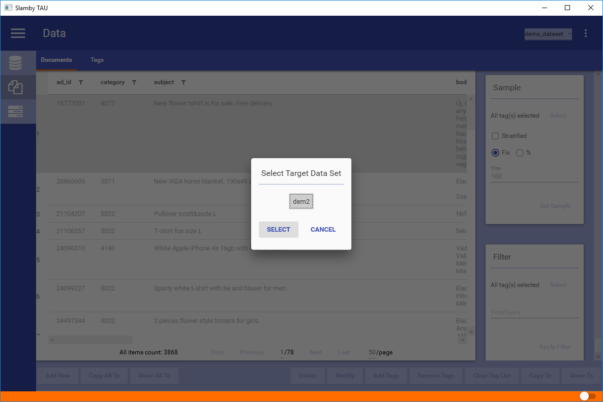
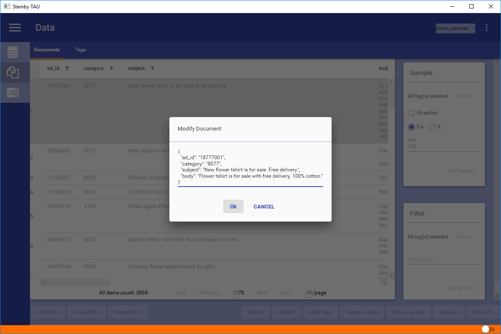

In Documents tab the main focus is to manage your live dataset.
Available functions:
Tip: managing documents use the available right-click options.
Adding a new document you use json format. In the editor you can see the json document template that you used during the dataset creation process. Change the template document with your content.
To save the document click Ok.

Copy the selected documents to another dataset. Pops up a target dataset selector, showing your available datasets. Select your target dataset and click on Select. Copying process starts in the background.
To copy all of your documents from your entire dataset use Copy All To option. Using this option it's not necessary to select any document, it will automatically affect each of it.
Important
The target dataset should have the same template then your current dataset to copy your documents.

Move the selected documents to another dataset. Pops up a target dataset selector, showing your available datasets. Select your target dataset and click on Select. Moving process starts in the background.
To move all of your documents from your entire dataset use Move All To option. Using this option it's not necessary to select any documents, it will automatically affect each of it.
Important
The target dataset should have the same template then your current dataset to move your documents.
Removes the selected documents from your dataset. Pops up a confirmation window to confirm your action.

Document JSON editor pops up. You can see your json document to edit. After editing click ok. Changes are automatically saved into your dataset.
Tip: use built-in json validator.

Adding tags to a selected document manually. Pops up a tag selector. You can see your full tag list. Using built-in filter option you can select your required tags.


Removes tags from selected documents instantly.

Create random selection from dataset. Available options:
Filter by tags
You can select from which tags you would like to create your samples. For a general e-commerce sampling a typical usage: select all the leaf level tags and use them for sampling.
Sampling procedure
You can use normal sampling, using your fill dataset-part as the whole dataset, then using a statistically random selection process. Using Stratified method, sampling will be created tag by tag, using the same size declaration process.
Tip: for general e-commerce sampling use normal sampling procedure.
Sampling Size Definition
You can define your sample size in pre-defined number or %. Using a fix number such as 10000, your sample size will be 10 000. Using a 10% relative sample size in the case of have a dataset with 1 million documents, the sample size will be 100 000.

For tag filtering use our built-in tag selector:

Example Filter Result - using fix size (3), non-stratified sample from each categories:

Use filter for complex search processes.
With Filter you can:
Filter uses built-in search engine with powerful and fast search capabilities.
Tip: build powerful, real-time search function using Filter.

Example Search Query and Result - with multiple queries with hierarchy: